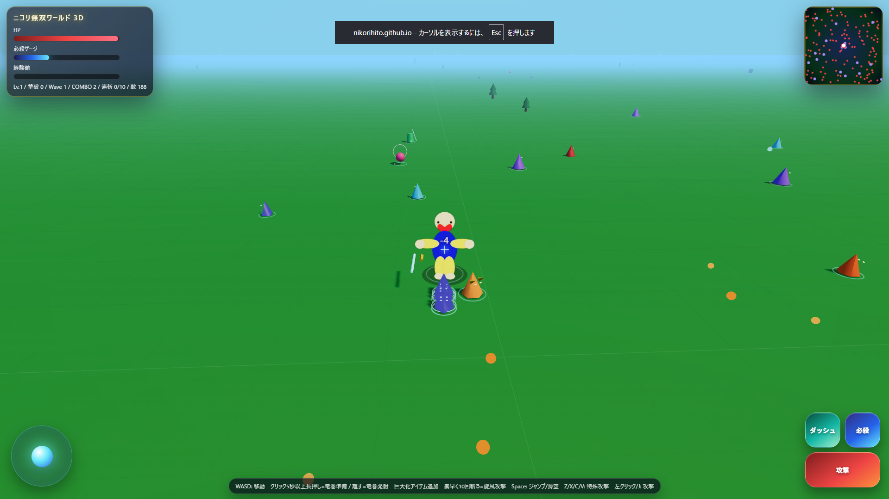

ニコリ無双ワールド 3Dを作りました！

```今回は、3Dのフィールドで敵をどんどん倒していくアクションゲームを作りました。
タイトルは「ニコリ無双ワールド 3D」です。ニコリヒトを操作して、立体フィールドを走り回りながら、たくさんの敵をなぎ倒していきます。
このゲームは、Three.jsとWebGLで描画する3Dゲームです。ブラウザで遊べますが、平面的なゲームではなく、しっかり奥行きのあるフィールドを動けるようにしました。
ゲーム画面にはHP、必殺ゲージ、経験値、レベル、撃破数、Wave、COMBOなどが表示されます。敵を倒していくと、無双ゲームらしくどんどんテンションが上がるようにしています。
基本操作はWASDで移動、左クリックまたはJキーで攻撃です。Spaceキーでジャンプや滑空ができるので、敵との距離を取りながら戦うこともできます。
クリックを5秒以上長押しすると竜巻の準備ができ、離すと竜巻を発射できます。大量の敵をまとめて攻撃できるので、かなり強力な技です。
さらに、素早く10回斬ると旋風攻撃も出せます。通常攻撃だけでなく、コンボや特殊攻撃を使い分けるのがポイントです。
Z/X/C/Vキーには特殊攻撃を入れています。状況に合わせて使うことで、敵を一気に倒したり、ボス戦を有利に進めたりできます。
巨大化アイテムも追加しています。いつもより大きくなって戦えるので、無双感がさらに強くなります。
PCだけでなくスマホにも対応しています。また、マウス固定が使えない環境では、自動でクリック長押しやドラッグ操作に切り替わるようにしています。
Waveを進めながら敵を倒し、最後はボス撃破を目指します。アクションが好きな人や、たくさんの敵を一気に倒すゲームが好きな人におすすめです。
ブラウザでそのまま遊べるので、ぜひ試してみてください。